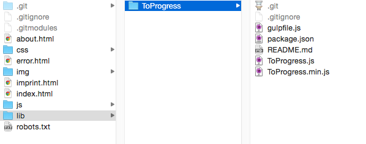

子模块
在项目开发时，你有可能经常性地想要去引用一些库文件或其它资源文件。手动的方法就是直接下载那些必要的代码文件，然后拷贝到你的项目中，最后将这些新的文件提交到你的 Git 仓库中去。
虽然这是一种有效的方法，但是这种操作并不是最简单有效的。如果只是任意地将这些库文件提交到你的项目中，将带来一系列的问题：
- 外部代码和自己开发的代码会被合并保存在一个项目中。其实那些库文件自身就应该是一个项目，并且也应该独立于我们的工作之外。在我们当前项目的版本控制系统中，它们并不需要被保存。
- 如果库文件发生了变化（可能因为修复错误或是添加新的功能），更新这些库文件的代码对我们来说会是很繁琐的事。我们需要再次下载它的原代码文件，并且替换掉在仓库中已有的文件。
由于这些都是在日常项目开发时非常普遍存在的问题，所以 Git 也提供了一个解决方案：子模块（Submodule）。
仓库包含其它的仓库
一个 “子模块” 其实就是一个标准的 Git 仓库。不同的是，它被包含在另一个主项目的仓库中。一般情况下，它包含一些库文件和其它资源文件，你可以简单地把这些库文件作为一个子模块添加到你的主项目中。
一个子模块也是一个功能齐全的 Git 仓库，就内部而言它和别的仓库没有什么区别，你可以对它进行修改、提交、抓取、推送等等操作。
让我们来看看在实际操作中子模块是如何工作的吧。
添加一个子模块
在这个简单的项目中，我们建立一个新的 “lib” 文件目录用来存放一些库文件。
$ mkdir lib
$ cd lib使用 “git submodule add” 命令，我们会从 GitHub 中添加一个小的 Javascript 库：
$ git submodule add https://github.com/djyde/ToProgress
来让我们来看看现在发生了什么：
- (1) 这个命令将对一个指定的 Git 仓库进行了一个简单地克隆操作：
Cloning into 'lib/ToProgress'...
remote: Counting objects: 180, done.
remote: Compressing objects: 100% (89/89), done.
remote: Total 180 (delta 51), reused 0 (delta 0), pack-reused 91
Receiving objects: 100% (180/180), 29.99 KiB | 0 bytes/s, done.
Resolving deltas: 100% (90/90), done.
Checking connectivity... done.
- (2) 当然这一切也都会反映在我们当前项目的文件结构上。在项目中的 “lib” 目录中包括了一个新的 “ToProgess” 文件目录。通过这个文件目录所包含的 “.git” 子文件夹我们就能确认，这就是一个标准的 Git 仓库。

概念不保存在它的父仓库中。其实只有它的远程 URL 会被记录在父仓库中，以及它在主项目中的本地路径和签出的版本。
当然，子模块的工作文件都放置在你项目的指定的目录中。最后当你要使用这些库文件时，你会发现它们并不是主项目的版本控制的一部分。
- (3) 一个新的 “.gitmodules” 文件会被创建。这个文件就是 Git 用来跟踪我们的子模块并保存它的配置信息的：
[submodule "lib/ToProgress"]
path = lib/ToProgress
url = https://github.com/djyde/ToProgress
- (4) 你可能会对 Git 的内部工作原理感兴趣。除了 “.gitmodules” 配置文件，Git 也会在你本地的 “.git/config” 文件中保存对子模块的记录。最终它也会在它的 “.git/modules” 目录中保存每一个子模块的 “.git” 仓库。
概念
Git 内部对子模块的管理是非常复杂的，就像你已经看到的那些 “.gitmodules”，“.git/config”，和 “.git/modules” 等等的条目那样。因此，这里强烈不建议你去手动地修改这些配置文件。为了安全起见，一定要使用适当的 Git 命令来操作子模块。
现在让我们来看看当前的项目状态：
$ git status
On branch master
Changes to be committed:
(use "git reset HEAD ..." to unstage)
new file: .gitmodules
new file: lib/ToProgress
像任何其他修改一样， Git 添加了一个子模块，并且要求你提交这个改动到仓库中：
$ git commit -m "Add 'ToProgress' Javascript library as Submodule"现在，我们已经成功地添加了一个子模块到我们主项目中来了！在了解几个不同的案例之前，让我们先来看看如何克隆一个已经包括了若干子模块的项目。
克隆一个项目和它的子模块
你已经知道了，一个项目仓库并_不_包含子模块的文件。主项目仓库仅仅保存子模块的_配置信息_来作为版本管理的一部分。
这就表示，当你要克隆一个带有子模块的项目时，在默认的情况下 “git clone” 命令仅仅接收这个项目本身。我们的 “lib” 只是一个空目录，里面没有任何文件。
你有两个选择去设置这个 “lib” 目录（或者是任何一个你保存的其他子模块，“lib” 在这里只是一个例子)：
-
(a) 你可以通过将 “--recurse-submodules” 参数加在 “git clone” 上，从而让 Git 知道，当克隆完成的时候要去初始化所有的子模块。
-
(b) 如果你仅仅只是简单地使用了 “git clone” 命令，并没有附带任何参数，你就需要在完成之后通过 “git submodule update --init --recursive” 命令来初始化那些子模块。
签出一个版本
一个 Git 仓库可以保存无限多个提交版本，但是仅仅只有一个文件版本能保存在你当前的工作副本中。就像任何其他的 Git 仓库一样，你必须自己来决定在子模块上的哪一个版本应该被签出到你的工作副本中。
概念
和一个普通的 Git 仓库不一样的是，子模块永远指向一个特定的提交，而不是分支。这是因为一个分支的内容可以在任何时间通过新的提交来改变。所以指向一个特定的提交版本就能始终保证代码的正确。
比方说，我们希望在我们项目中使用一个旧版本的 “ToProgress” 库。首先，我需要看一下这个库的提交历史记录。我们需要切换到这个子模块的根目录下，然后执行 “log” 命令：
$ cd lib/ToProgress/
$ git log --oneline --decorate在我们来检查实际的历史记录之前，有一点我想强调一下：Git 命令是对上下文环境很敏感的！也就是说，通过命令行来切换到子模块的目录后，我们执行的所有 Git 命令仅仅只会对子模块有效，而不是对它的父仓库。
现在历史记录被打印出来了，我们会发现这个提交被标记成了 “0.1.1”：
83298f7 (HEAD, master) update .gitignore
a3b6186 remove page
ed693b7 update doc
3557a0e (tag: 0.1.1) change version code
2421796 update readme
这就是我们希望在我们的项目使用的版本。首先我们可以来简单地看看这个提交：
$ git checkout 0.1.1再让我们来看看父仓库。在主项目的目录中执行下面的命令：
$ git submodule status
+3557a0e0f7280fb3aba18fb9035d204c7de6344f lib/ToProgress (0.1.1)通过使用 “git submodule status”，我们可以查看子模块的哪一个版本在当前被签出了。在 hash 之前的 “+” 符号是非常重要的，它表明该子模块在它父仓库的官方记录中存在一个不同的版本。这是合理的，因为我们的确修改并签出了版本标记为 “0.1.1” 的提交。
如果在父仓库上执行 “git status” 命令，我们就会发现像任何其他的变化一样，Git 移动了指向这个子模块的指针：
$ git status
On branch master
Changes not staged for commit:
(use "git add ..." to update what will be committed)
(use "git checkout -- ..." to discard changes in working directory)
modified: lib/ToProgress (new commits)
为了使这个改动生效，我们现在需要提交它到仓库中：
$ git commit -a -m "Moved Submodule pointer to version 1.1.0"更新一个子模块，当指向它的指针发生了变化之后
我们看到了如何签出一个子模块的特定版本。但是，如果是开发团队的其他成员在项目中改变了对子模块的指针呢？当他移动了指向子模块的指针到另一个版本之后，我们就要整合他的改动，例如通过抓取，合并，或是 rebase ：
$ git pull
Updating 43d0c47..3919c52
Fast-forward
lib/ToProgress | 2 +-
1 file changed, 1 insertion(+), 1 deletion(-)
Git 会以一个相当含蓄的方式告诉我们，“lib/ToProgress” 发生了变化。再次使用 “git submodule” 命令来索取更多和更细节的信息：
$ git submodule status
+83298f72c975c29f727c846579c297938492b245 lib/ToProgress (0.1.1-8-g83298f7)还记得那个小的 “+” 符号吗？这表明子模块发生了变化，我们当前签出的子模块版本不是主项目使用的中的 “官方” 版本。
使用 “update” 命令可以帮助我们修正它：
$ git submodule update lib/ToProgress
Submodule path 'lib/ToProgress': checked out '3557a0e0f7280fb3aba18fb9035d204c7de6344f'注释
在大多数情况下，使用 “git submodule” 家族的命令是不需要指定一个特定子模块的。但是正如上面的例子一样，如果我们给出一个子模块的路径，这个操作就只会针对那个给定的子模块。
现在我们签出了相同版本的子模块，这就是之前另一个团队成员提交到项目中的那个。
值得注意的是，“update” 命令会为你下载子模块的改动。设想一下，你的队友在你之前已经改变了指向子模块版本的指针。在这种情况下，Git 会为你获取在子模块的相应版本，并且签出这个子模块的版本，非常方便。
检查子模块的最新变化
正常情况下，你是不会经常改变库文件的代码的。如果这个子模块被真正地测试过，并且你也知道它非常匹配你的开发项目时，你才会使用它。
无论如何，子模块功能最大优点之一就是你可以很方便地与最新的发行版本同步（也许只是同步一个小小的优化）。
让我们来看看子模块是否提供了新的代码版本：
$ cd lib/ToProgress
$ git fetch
remote: Counting objects: 3, done.
remote: Compressing objects: 100% (3/3), done.
remote: Total 3 (delta 0), reused 0 (delta 0), pack-reused 0
Unpacking objects: 100% (3/3), done.
From https://github.com/djyde/ToProgress
83298f7..3e20bc2 master -> origin/master请注意！现在我们切换到了子模块的文件夹，之后的操作就像对待任何一个普通的项目仓库一样（因为它就是一个普通的 Git 仓库）。
现在 “git fetch” 命令显示，当前的确存在一些新的改动在子模块的远程上。
概念
在我们准备整合这些改动之前，我想再次重申一下。当检查这个子模块的状态时，我们会发现我们正处在一个detached HEAD上：
$ git status
HEAD detached at 3557a0e
nothing to commit, working directory clean
一般情况下，在 Git 中你总是会签出某个分支。然而你也可以选择签出一个特定的提交（而不是一个分支）。这是一种比较罕见的情况，在 Git 中通常应该避免。
然而在子模块上工作时，签出某个提交的情况是非常正常的。你要确保在你的项目中，签出一个确切的静态的提交（不是一个分支），并转移到一个较新的提交上。
现在让我们通过拉取操作来整合那些新的改动到你的本地子模块仓库中吧。请注意！你不能使用那个简写的 “git pull” 命令语法，而是需要指定特定的远程和分支。
这是因为我们正处于 “detached HEAD” 状态。因为在这个时刻你不是在本地分支上，你需要告诉 Git，你想要把拉取出来的改动整合到哪一个分支上去。
$ git pull origin master如果你现在已经执行过一遍 “git status” 命令了，你会发现我们的状态仍然处于 detached HEAD，并且在同一个提交上，当前被签出的内容并没有发生改变。如果我们在项目中想要使用这个升级后的子模块的代码，我们必须明确地将 HEAD 指针移动到分支上：
$ git checkout master我们已经完成了在子模块上的工作，现在让我们切换回我们主项目吧：
$ cd ../..
$ git submodule status
+3e20bc25457aa56bdb243c0e5c77549ea0a6a927 lib/ToProgress (0.1.1-9-g3e20bc2)由于我们刚刚移动了子模块的指针到了一个不同的版本，我们需要将这个改动提交到父仓库中去，从而让它成为主项目当前正式引用的 “官方” 版本。
在子模块中工作
有些时候，你可能会想要在子模块中作一些自己的改动。你已经知道了在子模块中工作就和在一个普通的 Git 仓库中工作一样，你在子模块目录中执行的所有的 Git 命令只会对这个子模块仓库有效。
比方说，你想对子模块进行一个小小的改动，你编辑了相关的文件，把它们添加到暂存区，并且提交它。
现在你可能会踩到第一块香蕉皮。因为如果当前你正处于一个 detached HEAD 状态，你的提交会迷失方向，它并没有关联到任何一个分支。一旦你签出了其他的东西，它的内容就会丢失。所以你应该在提交之前确保，你当前已经在子模块中签出了一个分支。
除此之外，你已经学到的其它一切 Git 操作都仍然适用。在主项目中 “git submodule status” 会告诉你指向该子模块的指针被移动了，你必须提交这个改动。
顺便提一下，如果你的子模块中还有_未提交_的改动，Git 也会在主项目中提醒你：
$ git status
...
modified: lib/ToProgress (modified content)
请务必始终保持子模块有一个干净的状态。
删除一个子模块
尽管很少会从项目中删除一个子模块，但是如果你确定想要这么做，也请不要手动地删除它，一旦所的有配置文件被打乱，将会不可避免地导致出现一系列问题。
$ git submodule deinit lib/ToProgress
$ git rm lib/ToPogress
$ git status
...
modified: .gitmodules
deleted: lib/ToProgress
使用 “git submodule deinit”，我们可以确保从配置文件中完全地删除一个子模块。
使用 “git rm” ，我们可以最终删除这个子模块的文件，包括一些其它废弃的部分。
提交这些改动，这个子模块就会从你的项目中被彻底地删除了。